呂清夫 撰文
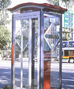
公共藝術應該曲高和眾﹐如果一味曲高便只能孤芳自賞﹐如果一味和眾也可能流於粗鄙低俗﹐故須在兩者間找到平衡點。公共藝術必須走入群眾﹐必須配合環境或景觀﹐自我中心的作品可能不像公共藝術。西方六十年代的普普藝術因其鮮麗的色彩、通俗的外形、趣味性的表現、平民化的傾向﹐一度促成了公共藝術的盛行。台灣大致並無普普藝術的經驗﹐故在公共藝術的引進而言﹐難免缺少那麼一點幽默與機智﹐但也不乏一些出色的近代化表現。一、台灣公共藝術的曙光公共藝術常與公共空間相結合，臺灣的公有建築物如能以身作則﹐每一棟都蓋得很講究﹐都有公共藝術的觀念，那麼臺灣的明日景觀一定會更好﹐臺灣的觀光資源也一定會更多。民國八十一年立法院通過了一項不尋常的法規﹐那就是「文化藝術獎助條例」﹐雖然立法比國外晚了一些﹐但仍有亡羊補牢之用﹐這使得台灣的公共環境有了起死回生的契機﹐該條例裏邊有兩點特別值得注意：（一）「公有建築所有人﹐應設置藝術品，美化建築物與環境，且其價值不得少於該建築物造價百分之一」。（二）「政府重大工程﹐應設置藝術品美化環境。」整個條例的基本精神在於扶植文化藝術事業、保障文化藝術工作者﹐提升國民審美素養。其中的第（一）項相當具體﹐不少公共建築也開始遵照辦理﹐如清華大學、台北市捷運局等是。其第（二）項雖未必適用百分之一的經費﹐但規定「重大公共工程之工程總預算在五億元以上者﹐其設置經費額度﹐依基地情況由興辦機關（構）併同設置計畫書﹐報請主管機關審定。」台灣的公共場所本來就可以看到一些藝術品﹐不過那還不能算是公共藝術﹐大約只能說是環境雕塑，至於「公共藝術」則限於「建築物造價百分之一」下的作品﹐台灣最近設置的公共藝術最醒目的首推以文建會的「公共藝術示範（實驗）計劃」。至於「台中縣校園雕塑藝術建置」、「台北市環境公共藝術創作展」、及「台北市捷運局公共藝術專案」等案例也很積極。其中徵選十分用心的台北市偏向環境改造，相當重視品質的台中縣偏向雕塑創作，只有文建會的專案最為多樣，包括壁畫、空間造形、立體造形、圓雕等各範疇。文建會的專案中，現在最少有九個點已經成為定案，有些案例也已經完成﹐台北市捷運局的雙連站壁畫則已完成﹐其他專案也在陸續進行。目前台灣的公共藝術最可能需要在定義上再作宣導與釐清，如果定義不清，便容易導致各說各話，乃至便宜行事。例如現成藝術品自然可以作為公共藝術，但是如果到處都使用現成的作品，而沒有特地為基地而設計的作品，便需要設法加以導正，甚至以特地設計者為優先考慮。同時公共藝術如在一件以上，應切實顧及彼此的協調，使整體不失為渾成一體的專案。又如公共藝術雖可以包含空間造形如地景藝術、景觀設計、乃至廣場設計，但是如被擴大解釋，變成基地改建、工程施工都包括在內，那麼公共藝術的經費將被蠶食殆盡。所以，公共建築的後續工程與修飾亦不應列入公共藝術。至於公共藝術如為空間造形及其他功能設計﹐則應確實審查是否為一件藝術作品。二、公共藝術是什麼玩意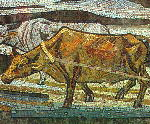
在民國八十二年頒佈的「文化藝術獎助條例施行細則」裏邊﹐對於公共場所的藝術品有明確的界定﹐其中提到本條例「所稱藝術品，係指繪畫、工藝、書法、雕塑、壁畫、攝影、及其他利用適當媒材完成之藝術創作」。由於上面的定義並為完全涵蓋公共藝術的範疇﹐所以筆者曾建議文建會在法規中把範疇說清楚﹐是以民國八十七年元月頒佈的「公共藝術設置辦法」中便寫明：「本辦法所稱公共藝術﹐……係指以繪畫、書法、攝影、雕塑、工藝等技法製作之平面或立體藝術品、紀念碑柱、水景、戶外傢具、垂吊造形、裝置藝術及其他利用各種技法、媒材製作之藝術創作。」台灣目前對於公共藝術的定義大致參考美國的做法，學者們的意見可歸納於下列數點：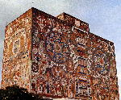
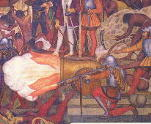
在墨西哥也有類似的情況，如里維拉（D.Rivera）、歐哥爾曼（J.O'gorman）等人都在從事同樣的嘗試。里維拉是在室內進行大壁畫的製作，他不但在壁畫的內容上使用本土的歷史主題，在形式上也採取傳統的造形。例如他的壁畫「墨西哥的歷史：從被征服走向未來」（1935年完成，見右圖），中央高850公分，長約1960公分，畫在總統官邸樓梯間西壁，描寫外族入侵、外族的宗教破壞、殘暴的宗教審判、直至墨西哥人為獨立而戰。歐哥爾曼則把傳統的造形語彙與色彩感覺重新組合於建築的外牆之上。如墨西哥大學圖書館壁畫（見左圖），即用十多種彩色石子嵌鑲而成。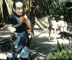
在這種與傳統的關係上言，還有一種仿古的傾向，如台南與通宵兩地的秋茂園，都用民俗雕塑的手法，塑造一些華洋雜處的著色水泥人物像（見圖），有些作品雖然難免粗俗，但其用心則可以理解。墨西哥的考古學公園則有另外的做法，亦即把傳統神像再現於公園中，類似仿古的古董，使不容易看到該神像的人可以方便看到。（二）寫實傾向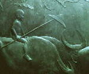
在台灣寫實風格可以說不絕如縷，不過寫實風格在近年常被搞混，以致變成模型一般，那顯然是誤解了寫實的真諦，其實寫實風格應該具有希臘人所謂的「崇高的單純與靜謐的莊嚴」，我們在台北中山堂光復廳的黃土水作品「水牛群像」（見圖）上便可看到這一點。而普普與超寫實雖然有點像模型，但其重點在於那種玩世不恭的傾向及某種的幽默感。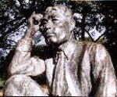
大約與「水牛群像」同時，台南縣的烏山頭也出現過一件環境雕塑「八田與一像」（見圖）。這件作品在藝術界可能知者不多，卻不失其環境雕塑上的重要性。這主要因為它具有高度的公共性，據悉台灣一百年前的嘉南一帶還是類似沙漠地帶，後來幸虧八田與一這個水利官員，出來仗量、籌建烏山頭水庫，那一帶才開始有了綠地。嘉南農田水利會曾在這件作品之旁提及：「為表彰其豐功偉績及對嘉南平原百萬農民之偉大貢獻，特於一九三一年七月八日建立本銅像以資紀念。」所以它的建造主要是出自民眾自發的行動﹐是「民眾參與」的最佳典範。在戰後的台灣，雖然政治銅像到處氾濫，但是好的寫實作品其實不多，除了老一輩如蒲添生等人之外，從事寫實創作者多半偶一為之。其實這裏面仍有很多可以發揮的空間，可以是浮雕，也可以是圓雕，圓雕更有胸像、坐像、立像、群像的種種範疇。在中國大陸則直到今天仍維持著寫實的路線。例如馬改戶於西安古城用花崗岩製作的「絲綢之路」，雖然是長達五十公尺的大工程，但仍不至於表現過於瑣碎的細節，堪稱群像的佳構。寫實並非不好或過時，相反的，在美育不彰的地區，寫實風格確有它存在的必要。（三）具象與圖案傾向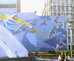
具象比諸寫實可能在於細節的更加省略或在於造形的更加強調，但如表現力不夠，則又容易變成圖案。只是我們近年的公共藝術較少注意到這方面來，事實上台灣過去的這種表現還真不少。吳隆榮在二二八和平公園音樂台兩側所畫的海鷗便是一種圖案設計（見圖）。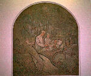
顏水龍在劍潭公園所作的「從農業社會到工業社會」其實是一件工藝作品。至於楊英風曾在台大醫院作過一件著色的線刻浮雕，圖案採用醫生看病的景象（見圖）。台灣的一般具象作品比較傾向於表現「人生的光明面」，如顏水龍的作品、王秀杞的「龍的傳人」（觀音山公園）等是。具象與寫實風格同樣適於表達人類的感傷，例如維吉藍（Vigeland）以一人之力在挪威奧斯陸創作的雕刻公園委實可圈可點，其中表現了人類生老病死的情。拉波波（Rapoport）一九七四年在耶路撒冷鑄造的兩大青銅柱也表達了以色列的浴火重生與獨立建國。至於圖案傾向亦可列入具象風格﹐它具有高度的實用性，所以常被利用在公共場所、公共傢具上。不過臺灣目前還只運用在裝飾上﹐例如賈孝遠在台東山地會館所作的望樓圖騰與入口木雕屬之。井婉婷也使用影像與文字編排，為台北捷運雙連站作出琺瑯板的橫長壁畫。如果要用馬賽克表現某種圖像，那麼便要將圖像予以圖案化，才能適合馬賽克的拼貼，同時表現馬賽克特有的趣味。這在法國與日本都可以看到優美的例子，在日本有景德鎮之稱的常滑市，為了表現陶瓷重鎮的特色，一些公共建築的外牆都被使用馬賽克貼出活潑的圖案，然這些圖案並非由名家來製作，而是由當地的藝壇人士集體創作而成。在巴黎近郊，一個為外來移民建造的集合住宅上，外牆即用馬賽克貼出一些著名詩人的畫像，這些牆面又環繞著一個圓形的廣場，顯得相當壯觀。（四）抽象傾向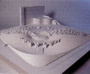
有機抽象在台灣可能是最常見的一種風格，一來大概由於它和庭石的造形有點關係，二來可能由於亨利．摩爾的影響，而摩爾本人又十分喜愛自然物的造形，特別是被風力、水力等自然力作用過的自然物更是他鑽研的對象。當然，台灣的有機抽象也相當多樣，這種造形的公共藝術與環境雕塑可見之於楊英風、郭清治、許禮憲、何恆雄、曹牙等人的作品，近年大家的材質更走入多樣化﹐如郭清治巧妙組合了不鏽鋼與花崗岩﹐許禮憲則把透明的與沈重的媒材架構在揚帆的造形上。但是也有一些作品是從現實抽象得來，如張子隆來自人體，黎志文得自泉水，曹牙來自樂器等是。新竹市公共藝術「竹影城跡」也在整個空間造形中使用有機抽象。有機抽象由於創作自由，故也方便於實用造形。至於庭石與有機抽象的微妙關係似乎更可以從密斯（m.miss）設計的天橋與看台看出端倪，她設計的這套公共傢具全是有機造形，其看台的曲線甚至模仿了自由女神的皇冠造形，人們可以從這個看台瞭望自由女神像與哈德遜河，至於她的設計作品安置的基地正是一個佈有庭石的日本式庭園。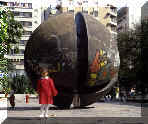
幾何抽象如李再鈐與陳振輝（見圖）都做過嘗試﹐但一般而言，在台灣看到這種作品常被聯想到只是普通的設計，同時幾何抽象也不便於進行自然圖像的變形，所以從事幾何抽象的人常常不會持久﹐李再鈐可能是個例外。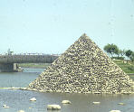
近年「象集團」在冬山河的設計則有很好的口碑，其公共傢具的設計都很講究，但一般而言應該偏向幾何抽象，如階梯式圓形座椅、仿龜山島的圓錐造形（見圖）、橋邊划船狀的人形皆屬之。事實上幾何抽象很契合現代的生活空間，很多的紀念碑也都採取此一風格，如台北的二二八紀念碑、華府越戰紀念碑、巴黎的新凱旋門等是。六、你出國才能看到的藝術品（ㄧ）變形與幻想傾向幾何抽象似乎並不一定完全適合表現止痛療傷的紀念碑，珍珠港戰歿者碑、越戰陣亡者碑雖都採用抽象形態，但其最核心的部份卻是刻得密密麻麻的戰歿者姓名，布魯塞爾的戰爭紀念碑則採用寫實造形，但仍因其簡單明瞭的1914,1918,1940,1945等兩次大戰的起迄年代而讓人觸目驚心。所以包浩斯的葛羅培斯（w.gropius）在一九二一年設計「戰爭陣亡者紀念碑」時便採用表現主義的風格﹐其他各國的紀念碑也常採用表現主義。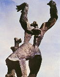
薩金（ZADKINE）在荷蘭鹿特丹市製作的戰爭紀念碑便是把人體做過極度的變形扭曲，形成呼天搶地的樣子，給人以一種令人肝腸寸斷的印象，深刻表現了對於第二次世界大戰的控訴，所以它的標題叫做「毀滅的城市」（見圖）。巴特勒（R.BUTLER）的英國「無名政治犯紀念碑」雖然只有簡單幾根線條與一塊巨石，卻表現了人類亙古的浩歎。另外﹐利普西茲（Lipchitz）在洛杉磯文化中心所作的人體變形銅雕亦屬之﹐周圍復佐以噴泉﹐優美壯觀至極﹐這在台灣可能就不會注意到噴泉﹐並可能是欠缺景觀概念所致。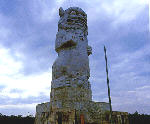
可能因為寫實與抽象都尚不足以表達強烈的情感，所以變形乃是為了表達激情而採取的手法。除了變形之外﹐還可能改用幻想或超現實的風格，例如高迪（A.Gaudi）在巴塞隆納設計的圭爾公園運用了特殊的形色，但也使用了噴水的龍頭。南連松在新加坡河口所作的魚尾獅便是一件充滿幻想風或超現實的造形，如今已成了獅城最著名的地標或觀光標誌。大陸藝術家李維祀在金門所設計的「風師爺」高達15公尺，與傳統風獅爺只有一﹑兩公尺比起來，自然壯觀得多，故有可能成為金門的新地標。但在台灣的公共藝術與環境雕塑中﹐此類作品並不多見。（二）後現代傾向後現代傾向在台灣比較少見，可能因為台灣的藝術資訊深度不夠，所以某些藝術思潮不是被忽略就是被曲解，抄襲被認為有理﹐後現代的風格常被視同傳統寫實，以致製成的作品常常只像個模型而已，既沒有傳統寫實的深度，也欠缺後現代的幽默感。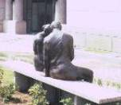
後現代作品的遊戲規則之一其實很簡單，那就是雕塑品參與了人們的生活，或與人們打成一片，雕像的大小、行止、所處情境都與在旁的一般人沒有差異，怪就怪在它只是雕像而已，讓人在假假真真之間頗覺有趣。余燈銓在台中縣政府便有一件類似的作品（見圖）﹐只是作者平常少見此類作品。 來過台北的哈斯（R.Haas）在蘇活區的一棟封閉建築物上畫滿了窗子，窗子上還有一隻狗伸出頭來，能有這些透氣的窗子其實正是人們的願望。或如葛倫（R.Glen）製作幾匹駿馬在奔跑，其放置的地點特別安排水花四濺，令人望之莞薾。或如西格爾（G. Segal）在人潮洶湧的車站中，製作幾個也在進站排隊的旅客雕像，讓真正的旅客在匆忙之中看到這些「不速之客」，不由得發出會心的微笑。
來過台北的哈斯（R.Haas）在蘇活區的一棟封閉建築物上畫滿了窗子，窗子上還有一隻狗伸出頭來，能有這些透氣的窗子其實正是人們的願望。或如葛倫（R.Glen）製作幾匹駿馬在奔跑，其放置的地點特別安排水花四濺，令人望之莞薾。或如西格爾（G. Segal）在人潮洶湧的車站中，製作幾個也在進站排隊的旅客雕像，讓真正的旅客在匆忙之中看到這些「不速之客」，不由得發出會心的微笑。 再如哈林（K.Haring）在草地上設計的玩具呈現兩個小孩在翻跟斗之形，各成半圓的兩個小孩之形剛好湊成一個正圓，可讓公園裏的小孩爬上去玩。又如波林（A. BOHLIN）設計的公共座椅剛好是兩個坐下來聊天的人形，人們坐在椅子上有如坐在他們的腿上（見圖）。亞康西本（V.Acconci）是個觀念藝術家﹐偶而製作了一件汽車的石雕﹐就剛好放在路邊﹐只是屬於違規停車﹐同時這部車子也被鋸成剩下一半（見圖）。後現代傾向也容易進行大規模的工程，如日本的磯崎新曾經仿造了一個羅馬著名的廣場，它原先是由米開朗基羅設計於羅馬最著名的、最神聖的卡比杜林山丘上，只是磯崎新在仿造的時候，卻把陰陽顛倒過來，亦即米開朗基羅的廣場設在山丘上，必須往上爬，才能到達這個山丘，而磯崎新的廣場是在窪地上，必須往下走才能到達，只是造形幾乎完全相同，頗為令人稱奇，並引人爭議。後現代傾向十分多樣﹐時而遊戲人間﹐時而感時憂國﹐然其機智則一﹐如歐登堡（c. Oldenburg）在耶魯大學校園製作一隻超大型的口紅鎮壓住一輛戰車，使之行不得也﹐表達了越戰期間女人反對男人出征的心理。他的作品通常都把小東西做得很大﹐令人印象深刻﹐影響深遠﹐澳洲某海鮮餐廳也援例把一隻蝦子做得很大放在屋頂上。（三）觀念化傾向觀念化傾向包括現成物及非物質化的作品。現成物（ready made）類似東方傳統的庭石，由於它具有不雕之璞的美感以及激發想像力的可能，古來一直為東方人所喜愛。蘇州的網師園、獅子林、拙政園等著名園林都可以看到這種庭石（。現代西方由於達達與超現實主義的推動，終於有了所謂「現成物」的觀念。但其現成物的範圍比較廣，人工物與自然物都包括在內，新品與廢物也都包含其中。如阿爾曼（P.ARMAN）曾將戰爭廢棄的坦克、大砲組合成戰爭紀念碑，布郎（J.Brown）則用廢棄的汽車壓製成古希臘的女像柱。
再如哈林（K.Haring）在草地上設計的玩具呈現兩個小孩在翻跟斗之形，各成半圓的兩個小孩之形剛好湊成一個正圓，可讓公園裏的小孩爬上去玩。又如波林（A. BOHLIN）設計的公共座椅剛好是兩個坐下來聊天的人形，人們坐在椅子上有如坐在他們的腿上（見圖）。亞康西本（V.Acconci）是個觀念藝術家﹐偶而製作了一件汽車的石雕﹐就剛好放在路邊﹐只是屬於違規停車﹐同時這部車子也被鋸成剩下一半（見圖）。後現代傾向也容易進行大規模的工程，如日本的磯崎新曾經仿造了一個羅馬著名的廣場，它原先是由米開朗基羅設計於羅馬最著名的、最神聖的卡比杜林山丘上，只是磯崎新在仿造的時候，卻把陰陽顛倒過來，亦即米開朗基羅的廣場設在山丘上，必須往上爬，才能到達這個山丘，而磯崎新的廣場是在窪地上，必須往下走才能到達，只是造形幾乎完全相同，頗為令人稱奇，並引人爭議。後現代傾向十分多樣﹐時而遊戲人間﹐時而感時憂國﹐然其機智則一﹐如歐登堡（c. Oldenburg）在耶魯大學校園製作一隻超大型的口紅鎮壓住一輛戰車，使之行不得也﹐表達了越戰期間女人反對男人出征的心理。他的作品通常都把小東西做得很大﹐令人印象深刻﹐影響深遠﹐澳洲某海鮮餐廳也援例把一隻蝦子做得很大放在屋頂上。（三）觀念化傾向觀念化傾向包括現成物及非物質化的作品。現成物（ready made）類似東方傳統的庭石，由於它具有不雕之璞的美感以及激發想像力的可能，古來一直為東方人所喜愛。蘇州的網師園、獅子林、拙政園等著名園林都可以看到這種庭石（。現代西方由於達達與超現實主義的推動，終於有了所謂「現成物」的觀念。但其現成物的範圍比較廣，人工物與自然物都包括在內，新品與廢物也都包含其中。如阿爾曼（P.ARMAN）曾將戰爭廢棄的坦克、大砲組合成戰爭紀念碑，布郎（J.Brown）則用廢棄的汽車壓製成古希臘的女像柱。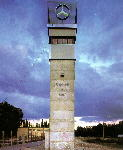
觀念藝術亦有現成物的情況﹐如哈克（h. haac）的作品乍看似乎與一般紀念碑並無不同，其實他只想表達某種觀念。他曾經複製了賓士公司的現成廣告塔，並在上面刻上文字﹐揭發了某些贊助現代美術的大企業也參與軍火輸出或種族隔離政策，哈克使用詳細的資料於其作品之中，成為社會批判要素極強的創作（見圖）。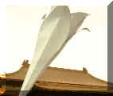
觀念藝術的重點在於非物質性的觀念，物質性的作品可以用完即丟。台灣一九九○年三月學運曾打出了高七公尺的野百合，它是由學生們用鉛管與帆布花一天一夜趕工而成，象徵著純潔、崇高、草根性、自主性、生命力，雖然原先並非為藝術而坐﹐但是性質近乎觀念性的裝置作品（見圖）。至於最短暫的作品則是加拿大人伍迪（H.Woody）所作的「空中雕塑」，他使用10×65英尺的長方形塑膠布，上面縫入六個大氣球，使其漂蕩於天空，其目的是為了觀察某地區的空氣品質，如氣壓、溫度、溼度等。至今他在各地創作的「空中雕塑」已經超過一百件，其資助者包括州藝術委員會、美術館、大專院校等。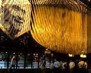
另外﹐動力藝術與光線藝術必須等作品在動、在亮的時候才能欣賞，它不像雕塑那樣，不管放在哪裏，隨時都可以觀賞﹐故其作品傳達給人的訊息是屬於非物質化或摸不著的東西。如索托（Soto）在龐必杜中心的光的藝術﹐塔奇斯（Takis）在巴黎新凱旋門附近的四十九盞「號誌燈」便是一種感應性的發光體，可以對附近的流動車燈產生感應，號誌燈的柱子也可以隨風飄動。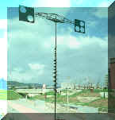
塔奇斯（Takis）也在台北中山美術公園展出的風力藝術（見圖）。另外，藤本由紀夫為日本立川創作的「有耳朵的椅子」則可讓人坐在他的作品上去聽風聲﹑雨聲。它們都是一些會動﹑會響﹑會亮的作品。它們的效果依靠的是一些具有時間性的能量，如果不動不響不亮便不成其為作品。林書民在捷運中正紀念堂站電扶梯旁所作的雷射壁畫，蕭麗紅在清華大學所作的電動造形亦屬之，但一般而言，在台灣仍不夠普遍。七、長江後浪推前浪就風格而言，台灣的有機抽象特別多，比較欠缺的風格則有幻想傾向、動力藝術、光的藝術、概念藝術等項。幻想的風格其實在傳統並不少見，如龍鳳、麒麟、饕餮可以說都是幻想的產物，但在今天則十分少見。新加坡的魚尾獅之所以能夠引起注目與讚嘆，可能就因為它的幻想或超現實要素發生了作用。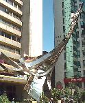
台北中山堂內掛上黃土水的「水牛群像」可以說相當速配，但是台北街頭如果到處擺出馬背屋頂的電話亭，便顯得有點突兀。烏山頭水庫旁設置水利工程師八田與一的寫實塑像可以說倍增人文氣息，但是台北中山北路的大樓前面如再擺出楊英風的「有鳳來儀」(見圖)，便顯得有點侷促。不過，公共藝術往往不只單一作品，一個空間之中如有多件作品同時出現，那麼作品之間必須有一個脈絡才好。日本立川市的都市空間之中，雖然安置了109件作品，而且出自世界各國的藝術家之手，但是其間仍舊可以理出一個脈絡來，那就是大部份作品都是普普風格到後期現代（Late Modern）的作品，如此更適合這個新開發的商業區，並給人以深刻的印象。公共藝術自然包含雕塑，但如果被雕塑定於一尊，便有需要使其更為多樣化，同時雕塑風格也相當複雜，如果做來做去都是抽象作品，便有需要使其多元化，以滿足民眾的多元面要求。從以上的探討中，吾人可以發現，公共藝術的天空非常廣闊，但是從上面的比較中，我們也可以發現，台灣的公共藝術還是集中在某些層面，在範疇上言，尤其是圓雕方面特別多，這可能因為它是最傳統的雕塑範疇，具有最悠久的歷史。其次，有些範疇反而是台灣所欠缺的或不夠的，如空間造形﹑噴泉水景、垂吊造形、街道傢具、裝置作品即比較少見。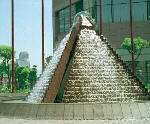
事實上台灣由於空間雜亂，處處需要空間造形的處理，每個車站﹑廣場﹑公園﹑綠地都亟待空間的規劃。台灣天氣炎熱，亟需噴泉水景來作調節，只是國民的公德心也要靠教育來培養，噴泉水景才能保持乾淨。台灣也喜歡蓋遠東第一﹑世界第一的建築，故挑空的空間很多，垂吊造形便顯得相當重要，但是這方面的人才常不容易找到。台灣人口密集，公共空間經常人山人海，所以街道傢具的設置便顯得相當急迫，不論候車亭﹑街路圖﹑街燈﹑座椅都極為需要。另外，台灣人喜歡聚會集會遊行，相對的也替裝置藝術提供了不少的空間。但是目前這些範疇都很少被人過問，值得大家將之耙梳出來，優先加以推動，如是台灣的公共空間才會有一點文化，公共藝術也才會更為生動。其實公共藝術還不只這些﹐如果根據美國學者托比妮特（Margaret Arobinette）的分析，公共藝術還有進一步擴充的可能性，其中至少還可以包括：（一）考古學的或歷史學的公共藝術: 如前所述﹐墨西哥考古學公園中有五十一件雕刻的常設展，它們都精確複製了前哥倫布期文化中的代表作，原作現存墨西哥的地方美術館或考古學上的挖掘地區。（二）為殘障者而設的戶外公共藝術：殘障者方便接近、甚至視障者方便觸摸的作品。（三）觀眾參與的公共藝術：一種是觀眾可以在作品上操縱、玩弄、攀登的作品；另一種是創作過程有觀眾參與思考的作品。（四）環境的或機能的公共藝術：例如羅馬的噴泉便是這個「永恆之城」引水成功的最高獻禮。又如親水庭園或公園中的淨水裝置可設計成一系列的動力藝術，也可以把簡單的機械裝置和都市消防栓的水結合起來，成為公共藝術。（五）可移動的或可搬動的公共藝術﹐如同圖書館的巡迴車一般。（六）臨時性的雕刻：裝置作品或風箏、氣球、旗幟等空飄的東西都可以包括在內。看來真是長江後浪推前浪﹐不過，托比妮特也提醒大家，這些作品並沒有比二○年代的東西還新，有些作品甚至幾世紀以前即已存在過。這裏面如有創新之處，應該在於公共藝術中的利用可能性。所以重點不在於種類的列舉，而在於是否能夠引起廣泛的討論，而大家最應關心的事情大概是作品能否豐富我們的精神生活。相形之下﹐不論範疇或風格﹐台灣的公共藝術比諸西方的現狀已相當有限﹐比諸最近的未來﹐可能更要捉襟見肘了。台灣是個相當多元的社會﹐需要十分多樣的公共藝術﹐除非你還要強調威權式的所謂「亞洲價值」﹐否則我們真要急起直追了。